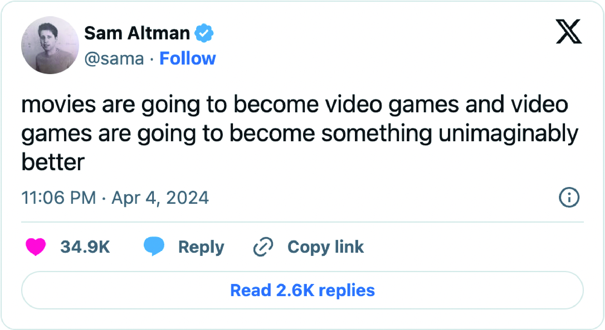

AI content creation: Ushering in the unimaginable
Embrace cutting-edge AI content creation tools to transform your marketing. Balance human input while harnessing machine efficiency.
Allen Martinez on April 26, 2024 at 9:57 am | Reading time: 11 minutes
Sam Altman’s proclamation that “movies are going to become video games and video games are going to become something unimaginably better” is more than just a prediction — it’s a vision of a new frontier in entertainment and content creation.
Artificial intelligence (AI) is already blurring the lines between passive viewing and active participation. It may create immersive, interactive and personalized experiences beyond anything we can now imagine.
This is why it’s essential CEOs and brand leaders recognize the profound connection between storytelling and technology. By combining storytelling and technology, we can achieve new levels of creative expression and audience engagement.

The rise of AI agents
AI agents will play a pivotal role in realizing this vision. They will facilitate the seamless integration of content creation tools, letting creators focus more on the artistry and less on the mechanics. Automating routine tasks and synthesizing complex data into actionable insights will change what’s possible in video production and game development.
A standout feature of AI-driven video content is its ability to engage the senses, redefining video content creation. This will have a profound impact. Here are just a few ideas for AI services and use cases in the games and movies:
- Real-time plot alteration: Narratives based on viewer/player reactions, personalizing the story as it unfolds.
- Enhanced virtual reality: Immersive VR experiences indistinguishable from reality.
- Predictive content creation: The ability to predict audience preferences could generate more enjoyable content for viewers.
- Interactive storytelling: Viewers choose aspects of a story to explore, with AI generating content in real time.
- Emotionally responsive soundtracks: Music, lighting and sound effects in films and games could be altered depending on the audience’s emotional state.
- AI scriptwriters: Enhanced NLP models could suggest outlines, structures and dialogue, or complete scenes based on the established tone and style.
- Personalized gaming challenges: Games that adapt to the skill level and preferences of the player, with challenges suited to their abilities.
- Character AI Deep Learning: Game characters could learn and evolve through player interaction.
- Procedural content generation: Infinite landscapes, levels or story arcs could make games and movies endlessly unique.
- AI-assisted animation: It could generate in-between frames or suggest new character animations.
- Voice synthesis: It could replicate voices, allowing for more diverse character dialogues without requiring extensive voice actor libraries.
- Facial expression and gesture AI: Enhanced recognition and replication of human expressions and gestures in characters to improve realism.
- Automated testing and debugging: Streamlining the testing phase of game development, identifying bugs and balancing issues more efficiently.
- AI in casting: Analyzing actor performances and predicting on-screen chemistry.
- Narrative exploration tools: Letting users explore alternative storylines or background details.
- Multi-sensory experiences: Beyond sight and sound, future AI may be able to stimulate other senses to enhance the immersive experience.
- Digital humans: Digital actors changing the dynamics of celebrity and performance.
- Learning from Viewers: Improving storytelling techniques or game mechanics by analyzing user interactions.
- Automated content moderation: Moderating user-generated content to maintain community standards.
- Virtual production assistants: Handling various aspects of production logistics, from scheduling to budget management.
- Enhanced localization: Content localization that can apply cultural nuance and slang when translating into other languages.
- User-generated content curation: Curating and enhancing user-generated content in games.
- Immersive educational content: Interactive educational content that adapts to the learning pace of the user.
- AI game masters: In RPG games, AI could play the game master, creating quests and storylines on the fly.
- Accessibility enhancements: Improving accessibility in games and movies via adjustments tailored for people with disabilities.
AI content creation tools: Crafting personalized growth through adaptive challenges
The interactive nature of video games means AI can create challenges adapted to individuals’ skills, preferences and progress. Through reinforcement learning and procedural generation, AI can create personalized challenges that foster brand growth strategies through adaptive learning.
My work on an AI-driven education platform showcased this capability. The system analyzed student performance data to deliver personalized lesson plans and exercises to address individual strengths and weaknesses. Applying similar approaches to entertainment will create more engaging experiences.
Imagine an AI-powered fitness video tailored to your performance — the ultimate in personalized content generation. Using computer vision to track your movements and machine learning to analyze your progress, create workout routines that push you to your limits while remaining achievable.
Dig deeper: AI in marketing: Examples to help your team today.
The potential applications of AI go far beyond this and could include adaptive challenges that can lead to personalized brand growth strategies. Imagine a game show with viewer-specific puzzles. By analyzing cognitive strengths, weaknesses and past performance, AI can generate rewarding and appropriately challenging experiences. This keeps the user motivated and ensures a positive and memorable encounter with the brand.
AI content creation apps: Empowering self-expression and personal growth
AI can create uncharted worlds for users to explore. Its assistance in design, including procedural generation and generative adversarial networks (GANs), allows for the creation of unique, endlessly explorable environments tailored to each person.
Imagine a space exploration experience where AI and machine learning create new planets, lifeforms and celestial phenomena to discover. Combining computer vision, natural language processing and machine learning, the AI could create a scientifically plausible yet visually stunning universe, allowing you to explore the cosmos in previously impossible ways.
Even nature documentaries, a staple in video content creation, could benefit from AI-generated environments. The AI would create new ecosystems with unique flora and fauna based on real-world biological data. These virtual environments would be scientifically plausible and visually breathtaking, allowing viewers to explore the natural world in ways limited only by their imagination.
Cultivating digital communities
AI-generated video content has the potential to foster social interaction and create virtual communities that bring people together and also a critical component of modern content marketing. Natural language processing, sentiment analysis and adaptive AI systems make it possible to create interactive experiences that encourage connection.
In developing artificial intelligence projects for higher education, I leveraged emerging technologies and machine learning to harness large amounts of data. I also analyzed discussion forums and chat logs to identify common interests and facilitate connections between students with shared goals or learning styles.
What would these communities look like? Maybe a VR hangout where you interact with AI-generated characters whose personalities and conversation topics adapt to your interests and social cues. By analyzing your language and behavior in real time, AI could create a dynamic social environment that feels natural and engaging, allowing you to form genuine connections with virtual characters and other human participants.
AI as a catalyst for self-expression
The interactive nature of modern video games could provide new forms of self-expression. AI-generated video content might be able to take this even further. Sentiment analysis, natural language processing and adaptive systems may make it possible to craft experiences that encourage viewers to explore their emotions, beliefs and values.
Our advancements in AI have demonstrated the power of personalized and adaptive experiences. By analyzing emotional cues, AI can facilitate more than just learning; it can enhance entertainment by integrating viewers’ emotional inputs into the narrative. This opens new possibilities for content that resonates on a personal level.
Dig deeper: ChatGPT vs. Gemini vs. Perplexity: The definitive AI chatbot battle of 2024
Imagine an AI-driven art therapy program that generates personalized creative prompts based on your emotions and reflections. This application of AI enhances the content creation process and makes it a mirror for individual growth and self-expression, providing a safe and supportive environment for users to explore and express their inner selves.
Moreover, like coming-of-age dramas, narrative-driven content could benefit from AI-enabled personalization. Picture a series where the protagonist’s journey mirrors your own, shaped by your choices and emotional responses. This could allow viewers to see their personal growth and challenges reflected in the characters and story, deepening the connection with the content.
AI content creation software: Crafting fantastical worlds
AI has the potential to elevate fantasy in video content to new heights. Using procedural generation, computer vision and natural language processing, AI can create immersive, responsive and detailed fantasy worlds that surpass current gaming.
As someone who has spent years exploring AI’s creative potential, I can attest to its remarkable world-building capabilities. In developing an AI video production pipeline, we are redefining the content creation definition, focusing on a mix of creativity and technology for my startup’s offerings. I’ve integrated open-source technologies with proprietary AI models to craft new worlds.
Leveraging creativity vs. innovation in artificial intelligence, utilizing techniques like GANs to generate realistic textures, environments and even characters based on written prompts and visual inputs. Our venture into AI video production is not just about technology; it’s about setting new benchmarks in content creation, where fantasy and reality merge seamlessly.
Imagine a fantasy adventure where you create your own magical abilities and mythical creatures, with the AI generating a unique quest tailored to your imagined world. By analyzing your descriptions and preferences, the AI could craft a story that allows you to experience your imagination come to life.
AI in content creation: The next evolution of dynamic storytelling
At the core of Altman’s vision is the promise of AI’s ability to craft dynamic, branching narratives that are as responsive and complex as the most sophisticated video games. By leveraging natural language processing, sentiment analysis and machine learning, AI can create stories that adapt and evolve in real-time based on viewer choices and engagement.
My upcoming AI video production venture will leverage these capabilities to generate dynamic, data-driven storylines and character arcs based on audience feedback and analytics. In crafting a branding strategy for the digital age, we’re building a dynamic storytelling engine that incorporates emerging technologies in AI, setting trends and shaping the future of content creation.
Imagine a saga that weaves intricate, interconnected character arcs and plot twists based on viewer feedback and engagement. By analyzing viewer reactions and predicting future plot points based on past behavior, the AI could create a story both unpredictable and satisfying, keeping viewers invested in the characters and their journeys.
This dynamic storytelling showcases the capabilities of AI in revolutionizing content creation, offering a new paradigm in narrative complexity, matching Altman’s perspective on movies becoming more like interactive experiences.
Content creation automation for enhancing focus and passive enjoyment
AI-generated video content also has the potential to enrich the passive enjoyment of content, making even simple forms of entertainment more engaging and responsive. Through procedural generation, sentiment analysis and reinforcement learning, AI can create experiences that adapt to the viewer’s preferences and moods.
In higher education, I’ve used AI and natural language processing (NLP) to process large amounts of data to create empathetic, tailored educational experiences. Gamifying learning experiences that offer low-stakes challenges and personalized rewards that keep students motivated and engaged. This principle, when applied to entertainment through AI, redefines content production, offering relaxation and engagement without demanding active participation.
Dig deeper: Transforming content marketing lifecycles with AI
Imagine an AI-driven ambient video series with soothing visuals and soundscapes tailored to your mood and desired level of relaxation. By analyzing biometric data and emotional state, the AI could craft a personalized, immersive experience to help you unwind and recharge.
Even artificial intelligence pets could be enriched by AI-generated companions. There could be a unique, responsive animal companion that evolves and interacts based on the care and attention you provide. By analyzing your behavior and emotional state, the AI could create a personalized satisfying experience that allows you to form deep, meaningful bonds with your virtual pet.
Content creation with AI
AI enhancement of passive content could be the initial step toward making movies more like video games. Introducing interactive and adaptive elements to traditionally one-way experiences to create back-and-forth interactions. This will impact physical experiences as well. The increasing adoption of AI in content creation should be approached with care to ensure it augments, rather than displaces, human creativity and craftsmanship. By striking a balance between the abilities of AI and human artistic expression, we can create a future where technology and human ingenuity thrive together in the creative industries.
We’re on the edge of a new era in entertainment, ready to go beyond what we can currently imagine. AI agents are set to become the backbone of this new age. AI will not only automate the mundane, giving creators more time to create, it can also bring a nuanced understanding of audience engagement, making each experience uniquely resonant.
Throughout my journey — from using AI for business intelligence to working on educational platforms and AI-driven video production — I’ve witnessed the transformative power of this technology. We are entering a world where our participation breathes life into every frame of content, where we are not merely passive observers but active co-authors and protagonists in interactive experiences.
The “unimaginably better” experiences Altman talked about are an imminent reality, waiting to be shaped by human creativity and the limitless capabilities of artificial intelligence. They can redefine the boundaries of storytelling, world-building and multi-media consumption.